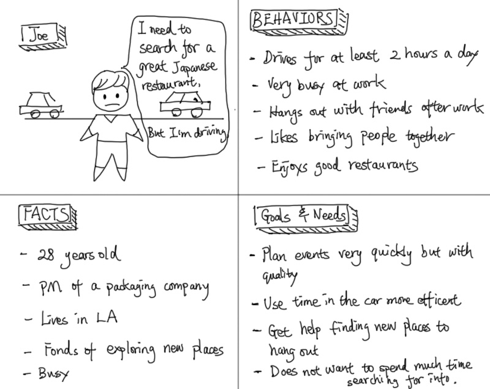
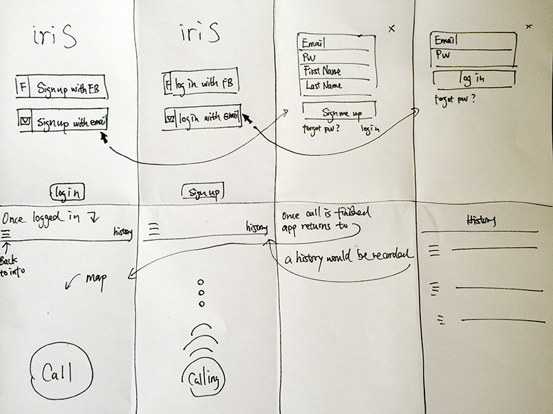
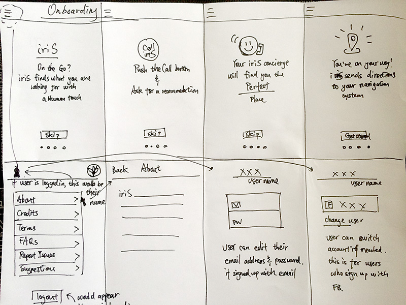

iriS app Design & Onboarding
iriS is a fictional project I worked on with my friend Yusuke (Who developed ProducTind). The idea of this app is to help people solve their problems when they are driving.
Below is a quick prototype I made. I will explain how I got there.
Problem
A lot of people have to drive for hours everyday. While you are driving, there are many things you cannot do or cannot do well. iriS is designed to help with it.
Project
My friend wants to work on developing this app. But he doesn't know if it is going to work. I helped him design the prototype to validate. We were also testing if the onboarding flow works.
My Role
• Persona •User stories •User Task Flows • Wireframes •UI design •Production assets
Design Stories
With iriS, user can ask for recommendations on locations, events, places to stay, etc; user can also get directions sent to their mobile device and be guided to the locations; User can rate the service; User can report problems, etc.
Persona
We developed a few personas based on goals and needs. Below is one of them and I will be using him to guide my designs.
Joe can call iriS while driving "Find me a 4 start yelp rating Japanese restaurant near X, I want to know if they have parking, and if it has this dish xxx."
Joe can also ask "I want to go to a cool event tonight, near xxx address. Please find me 3 of them and let me know?"
Onboarding Flow
This is my design to get new users onboard

Wireframes
From the information that I have, I skeched these wireframes out. The goal is to keep this app simple but informative. Easy to use. I have sketched other variations, they all have their good points and trade-offs. I chose this one because I think it matches what I want the users to experience th best.
 Based on my wireframes, I developed these high-fidelity screens. They are ready for production.
App Icon & Splash Page
I want the Icon to be simple and elegent. I gave the team several ideas and we finally decided on this one.It goes with the typeface I designed for this app. It represents the fact that this product can help users get their jobs done nice and quickly.

High-Fi Major Flows.
This flow chart down below demostrate how new/existing users can interact with this app. It highlights the major task flows.

Last but not least, again, the quick prototype.